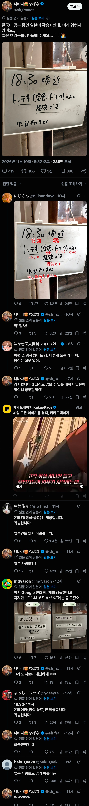

일본인들 : 한국이 사과할 필요 없다. 일본 잘못이다
댓글
ㄹㅇ
이 정도면 저거 쓴 새끼가 잘못한거임
일본도 악필이 있는만큼 걔들이 한문쓰면 도통 알수가 없더라
그냥 인쇄하면 되는데
한국어 배우는 일본어 학습자? 일본인이란거지?
나도 그게 헷갈렸음 아마 번역기가 찐빠 낸걸까?
저거 원문은 일본어이고
그록이 한국인 부분을 korean으로 자동 영어 번역 되던데
저 짤 만든 사람이 번역기 또 돌려서 한국어 된 듯
Japanese learner 인듯 ㅋㅋㅋㅋ
트위터 자동번역 후쿠오카는 부산이라고 번역함 ㅋㅋㅋ
개씹 ㅋㅋㅋㅋㅋㅋㅋ
어.. 그랬던적이 있나?
한국어 공부중인 일본어 학습자가 뭔말인지 이해한참 걸림
고로 옆에는 뭔가 했더니 마데를 한자로 쓴 거구나 첨보네
まで(~까지)를 迄로 쓰는 거 보고 대체 뭐하는 데인가 싶었는데 그냥 식당이었구나
어디든 頃迄 가끔 쓰긴 함
걍 많이 써
이자카야 한곳에 방문한적 있었는데 해당 술집 술&안주 메뉴판 글씨체가 읽거나 번역하기 어려울 정도라서 당황한적 있었음.
돈테키랑 테쇼쿠 드링크 이거만 읽히네 ㅅㅂㅋㅋㅋ
그래도 요즘엔 악필도 AI가 잘 해석해주더라
일본어 공부하는 사람으로써
한국어가 버전3라면 일본어는 버전2 느낌이라서 과거에는 한국말이 이랬겠구나 싶어서 배우면 재밌음
다들 공부해보셈
어...음... 과거의 한국말이긴 했지...

그렇긴한데, 일본은 약간 신라 이두문자 사용하는 느낌에서 발전이 멈추었고, 한국어는 여기서 한번 진화를 한 느낌,
일본 가게 수기 메뉴판같은거 악명높긴하더라
용서가 없다니...!!
카카오페이지 바이럴
하필 저런데는 가격이 착해서 이악물고 가서먹고 싶어짐
카카오페이지 바이럴글이네